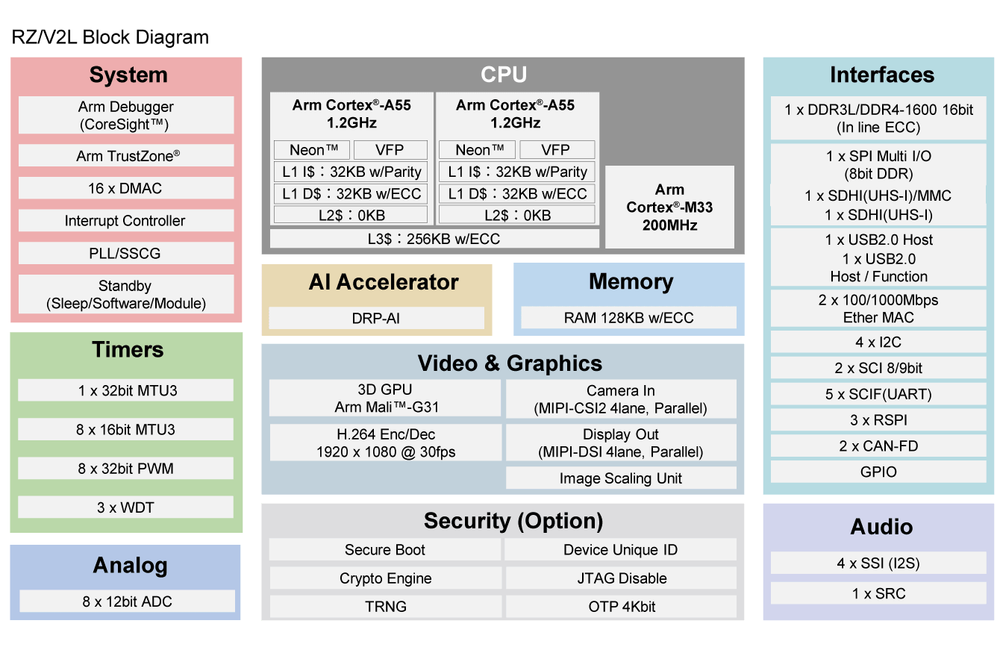

RZ/V2L SMARC Evaluation Board Kit
概述
Renesas RZ/V2L SMARC 评估板套件（RZ/V2L-EVKIT）由一块 SMARC v2.1 模块板和一块载板组成。
器件：RZ/V2L R9A07G054L23GBG
双核 Cortex-A55、Cortex-M33
BGA 551 引脚，15mm 见方封装，0.5mm 间距
SMARC v2.1 模块板功能
载板功能
标配 FFC/FPC 连接器，用于连接摄像头模组的高速串行接口。
标配经 DSI/HDMI 转换模块引出的 Micro-HDMI 连接器，用于连接数字视频模组的高速串行接口。
标配 Micro-AB 插座（ch0：USB2.0 OTG）和 A 型插座（ch1：USB2.0 主机），分别用于连接 USB 接口。
标配 RJ45 连接器，用于基于以太网的软件开发和评估。
标配音频编解码器，用于音频系统的进阶开发。板载音频插孔用于连接音频接口。
板上实现了 CAN 接口，用于连接 CAN 总线。
板载 Micro-AB 插座，用于连接异步串口接口。
板上实现了 microSD 卡槽和两个 PMOD 插座，作为 RZ/V2L 外设功能的接口。
供电方面，板载 USB Type-C 插座支持 USB PD 标准。
MIPI 摄像头模块
套件包含 MIPI 摄像头模块（MIPI CSI）。可以对 MIPI 摄像头输入的图像进行图像识别处理。
硬件
Renesas RZ/V2L MPU 文档可在 RZ/V2L Group Website [1] 找到


该开发板的详细硬件特性可在 RZV2L-EVKIT Website [2] 找到
多操作系统处理
RZ/V2L-EVKIT 允许在 RZ/V2L SoC 中执行不同的应用程序。借助多核架构，每个内核都可以独立运行以执行定制任务，或使用 OpenAMP 框架交换数据。可参考 OpenAMP Linux Zephyr RPMsg 示例。
支持的功能
rzv2l_smarc 开发板支持下列硬件功能。
说明
The list of supported hardware features was not generated. Run a full documentation build for the required metadata to be available.
编程与调试
说明
The list of supported runners was not generated. Run a full documentation build for the required metadata to be available.
rzv2l_smarc 开发板的应用程序可以按照 构建应用程序 中描述的常规方式构建。
Console
将 Pmod USBUART 连接到 PMOD 1 的上排，即可访问 Cortex-M33 系统内核的 UART 端口。
调试
可以使用 JLink 调试器（J-Link 调试主机工具），在本开发板的 Cortex-M33 系统内核上从内部 SRAM 加载并执行 Zephyr 应用程序二进制文件。
以下以 Hello World 应用程序为例，演示构建和调试。
# From the root of the zephyr repository
west build -b rzv2l_smarc/r9a07g054l23gbg/cm33 samples/hello_world
west debug
烧录
RZ/V2L-EVKIT 设计为在不同内核上启动不同的系统。它使用 Yocto 作为构建系统来构建 Linux 系统和引导加载程序，并通过 u-boot 在 Cortex-M33 上运行 Zephyr。最少步骤如下。
按照 SMARC EVK of RZ/V2L Linux Start-up Guide [3] 中的“2.2 Building Images”准备构建环境。
在第 (4) 步，按照 RZ/V2L Quick Start Guide for RZ/V Multi-OS Package [4] 中“3.2 Integration of OpenAMP related stuff”的“2. Download Multi-OS Package”和“3. Add the layer for Multi-OS Package”步骤，添加 Multi-OS Package 层。
$ cd ~/rzv_vlp_<pkg ver>
$ unzip <Multi-OS Dir>/r01an7254ej0311-rzv-multi-os-pkg.zip
$ tar zxvf r01an7254ej0311-rzv-multi-os-pkg/meta-rz-features_multi-os_v3.1.1.tar.gz
$ cd build
$ bitbake-layers add-layer ../meta-rz-features/meta-rz-multi-os/meta-rzv2l
开始构建：
$ MACHINE=smarc-rzv2l bitbake core-image-minimal
以下所需的构建产物位于 build/tmp/deploy/images 中
构建产物 |
文件名 |
|---|---|
引导加载程序 |
bl2_bp-smarc-rzv2l_pmic.srec fip-smarc-rzv2l_pmic.srec |
Flash Writer |
Flash_Writer_SCIF_RZV2L_SMARC_PMIC_DDR4_2GB_1PCS.mot |
按照 SMARC EVK of RZ/V2L Linux Start-up Guide [3] 中的“4.2 Startup Procedure”进行供电，并完成 SCIF 下载时的开发板设置（SW11[1:4] = OFF, ON, OFF, ON）和（SW1[1:2] = ON, OFF）
按照 SMARC EVK of RZ/V2L Linux Start-up Guide [3] 中的“4.3 Download Flash Writer to RAM”将 Flash Writer 下载到 RAM
按照 SMARC EVK of RZ/V2L Linux Start-up Guide [3] 中的“4.4 Write the Bootloader”，使用 Flash Writer 将引导加载程序写入目标板。
按照“4.5 Change Back to Normal Boot Mode”操作，开关设置为（SW11[1:4] = OFF, OFF, OFF, ON）和（SW1[1:2] = ON, OFF）
按照 SMARC EVK of RZ/V2L Linux Start-up Guide [3] 中的“3. Preparing the SD Card”将文件写入 microSD 卡
将 zephyr.bin 文件复制到 microSD 卡
按照 RZ/V2L Quick Start Guide for RZ/V Multi-OS Package [4] 中“4.3.2 CM33 Sample Program Invocation with u-boot”从开头执行到第 4 步
在控制台上执行以下命令，在 CM33 内核上启动 Zephyr 应用程序。其中 ''N'' 表示存放 zephyr.bin 文件的分区号。
Hit any key to stop autoboot: 2
=> dcache off
=> mmc dev 1
=> fatload mmc 1:N 0x00010000 zephyr.bin
=> fatload mmc 1:N 0x40010000 zephyr.bin
=> cm33 start_normal 0x00010000 0x40010000
=> dcache on